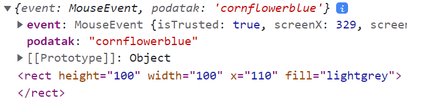
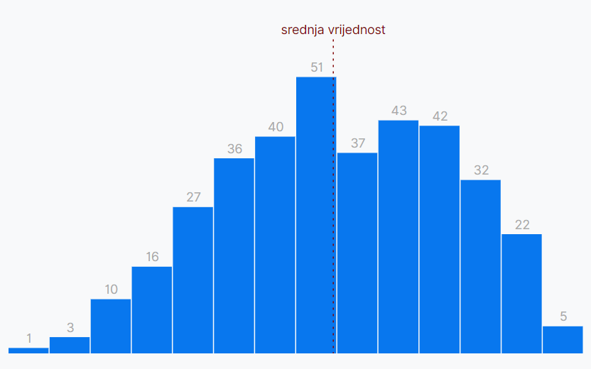
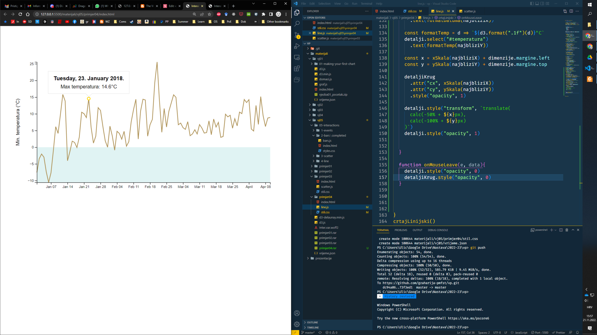

Vizualizacija podataka
Vježba 05
Vježba 05
- Jedna od prednosti izrade vizualizacija pomoću JS je što možemo dodati interakcije - reagirati na korisnički unos
- Web preglednici imaju ugrađenu metodu za upravljanje događajima, možemo detektirati:
- akcije miša ili tipkovnice
- "skrolanje"
- dodir na ekranu
- promjena pozicije ili veličine prozora...
- Koristiti ćemo d3 metode za događaje koje su jednostavne za korištenje i dodaju još novih funkcionalnosti
- Sa stranice kolegija preuzmite "vj05_pocetak" i otvorite projekt "primjer01"
function onClick(e) {
// upravljanje događajem
}
addEventListener("click", onClick)Interakcije
- Početni primjer je jednostavan
- imamo niz sa bojama
- radimo d3 selekciju i pridružujemo boje
- sa enter metodom dohvaćamo nove unose i za svaki stvaramo jedan pravokutnik sive boje
Interakcije
- Dodati ćemo interakciju - promjenu boje na hover
- d3 koristi metodu .on() za upravljanje događajima
- prvi parametar je događaj koji se detektira
- drugi parametar je callback funkcija
- pri pozivu prima dva parametra
- objekt događaja (eng. event)
- vezani podatak (eng. datum)
- funkcija ima referencu this na čvor koji je detektirao događaj, a kojeg imamo i u svojstvu event.currentTarget
- pri pozivu prima dva parametra
- Za početak ćemo samo testirati osnovni mouseenter događaj:
kvadrati.on("mouseenter", function(event, podatak){
console.log({event, podatak}, this)
})Interakcije
- Kada prijeđemo mišem iznad elementa, možemo vidjeti detalje događaja u konzoli
kvadrati.on("mouseenter", function(event, podatak){
console.log({event, podatak}, this)
d3.select(this).style("fill", podatak)
})
- Želimo da svaki pravokutnik promijeni boju u onu njemu pridruženu
- imamo sve potrebne podatke:
Interakcije
- Sada kvadrati mijenjaju boju u onu koja im je pridružena
- koristili smo "style" metodu jer CSS "fill" ima prednost nad SVG "fill" atributom
- Preostaje nam problem što kvadrati ostanu obojani
- pokušajte to riješiti...
kvadrati.on("mouseleave", function(){
d3.select(this).style("fill", "lightgrey")
})- Napomena: ne koristimo arrow funkcije jer one imaju različiti doseg this reference
- ne bi imali pristup elementu koji je detektirao događaj
Uklanjanje događaja
- S obzirom da ćemo često animirati i mijenjati elemente, povremeno ćemo morati i uklanjati događaje (tj. osluškivanje)
- to se radi također sa .on() metodom kojoj šaljemo null referencu
- Sa metodom .dispatch() možemo "ručno" pozvati neki događaj
- Napisati ćemo metodu koja nakon 3 sekunde uklanja detekciju događaja i automatski poziva "mouseout" kako bi svi kvadrati bili sive boje prije nego uklonimo osluškivanje
setTimeout(() => {
kvadrati
.dispatch("mouseleave")
.on("mouseenter", null)
.on("mouseleave", null)
}, 5000)Primjer 02
- Vratiti ćemo se na prethodne vizualizacije i dodati im mogućnost interakcije - počinjemo sa bar chart
- Otvorite mapu "primjer02"
- imamo jednostavniju verziju sa prikazom jedne metrike
- dodati ćemo tooltip okvir koji će za odabrani stupac prikazivati raspon vlažnosti i koliko je dana u toj kategoriji

Interakcije
- Sjetite se da interakciju možemo dodati i sa CSS hover stanjem
- napisati ćemo jednostavno pravilo
.kosara rect:hover {
fill: purple;
}- Interakciju možemo dodavati kroz CSS ili JS
- CSS je prikladniji za vizualne promjene bez DOM manipulacije
- JS koristimo kod složenijih interakcija
- Uz promjenu boje želimo i dodatni okvir sa detaljima
- HTML datoteka već sadrži strukturu okvira
- postavljen je kao nevidljiv u CSS-u (opacity: 0;)
- HTML datoteka već sadrži strukturu okvira
Interakcije
- Za početak ćemo svim stupcima grafa dodati mogućnost detekcije dva događaja (mouseenter i mouseleave) te napisati prazne event handler funkcije
// 7. Interakcije
sveKosare.select("rect")
.on("mouseenter", onMouseEnter)
.on("mouseleave", onMouseLeave)
function onMouseEnter(event, podatak){
}
function onMouseLeave(event, podatak){
}Interakcije
- Početna interakcija je jednostavna
- dohvatiti ćemo div element (cijeli okvir) sa select metodom
- unutar njega dohvatiti span i prikazati broj dana
- također ćemo prikazati i raspon
- naravno, ako već niste, u CSS uklonite prozirnost okvira
- dohvatiti ćemo div element (cijeli okvir) sa select metodom
const detalji = d3.select("#detalji")
function onMouseEnter(event, podatak) {
detalji.select("#brojac")
.text(yAccessor(podatak))
detalji.select("#raspon")
.text([podatak.x0, podatak.x1].join(" - "))
}d3.format()
- U prethodnom slučaju nam može doći do pogreške prilikom zaokruživanja vrijednosti (iako imamo nice metodu)
- Također, bilo bi dobro da su sve oznake jednako formatirane
- iskoristiti ćemo d3-format modul koji ima mnoštvo opcija formatiranja
const detalji = d3.select("#detalji")
const vlFormat = d3.format(".2f")
function onMouseEnter(event, podatak) {
detalji.select("#brojac")
.text(yAccessor(podatak))
detalji.select("#raspon")
.text([
vlFormat(podatak.x0), vlFormat(podatak.x1)
].join(" - "))
}Interakcije
- Ostao nam je još (složeni) način računanja x i y pozicije
- x lokacija je suma početka stupca, pola širine stupca i margine
- y je jednostavnija - zbrajamo visinu stupca i gornju marginu
const x = xSkala(podatak.x0)
+ (xSkala(podatak.x1) - xSkala(podatak.x0)) / 2
+ dimenzije.margine.left
const y = ySkala(yAccessor(podatak))
+ dimenzije.margine.topdetalji.style("transform", `translate(${x}px, ${y}px)`)- Nakon izračuna moramo i pomaknuti okvir za te iznose
Interakcije
- Problem nam je što smo izračunali poziciju za početak elementa tj. gornji lijevi rub - a želimo da nam dno i sredina okvira bude tu
- Postoji više načina kako to napraviti
- top, left, right i bottom svojstvima
- marginama
- getBoundingClientRect()
- ...
- Iskoristiti ćemo CSS calc() metodu koja kombinira različite jedinice
detalji.style("transform",
`translate(
calc(-50% + ${x}px),
calc(-100% + ${y}px)
)`)Interakcije
- Sada kada smo podesili poziciju okvira, možemo ga ponovno sakriti u CSS pravilu
- Na kraju onMouseEnter ćemo dodati
detalji.style("opacity", 1)- Također želimo ponovno sakriti okvir kada se pomaknemo sa stupca (uklonili smo parametre jer nam ne trebaju)
function onMouseLeave(){
detalji.style("opacity", 0)
}Primjer 03
- Idući zadatak nam je dodati interakcije na scatter graf
- Otvorite i pokrenite stranicu iz direktorija "primjer03"
- imamo dovršeni scatter plot (sa prethodnih vježbi)
- ponovno HTML sadrži strukturu okvira za detalje
- Započnimo sa istim koracima
- odaberite sve circle elemente unutar granice
- dodajte im događaje (i funkcije)
- dohvatite okvir za detalje (kako bi mogli manipulirati sa njim)
granice.selectAll("circle")
.on("mouseenter", onMouseEnter)
.on("mouseleave", onMouseLeave)
const detalji = d3.select("#detalji")
function onMouseEnter(e, d){
}
function onMouseLeave(){
}Primjer 03
- Napišite prikaz vrijednosti za dva podatka u ekranu "#detalji"
- napišite funkcije za formatiranje podataka
- dohvatite odgovarajući span
- dodajte mu tekstualnu vrijednost
- imamo accessor funkcije za dohvat iz skupa podataka
- otkrijte okvir sa detaljima za potrebe testiranja
function onMouseEnter(e, d){
const formatV = d3.format(".2f")
detalji.select("#vlaznost")
.text(formatV(yAccessor(d)))
const formatR = d3.format(".2f")
detalji.select("#rosiste")
.text(formatV(xAccessor(d)))
}Primjer 03
- Također želimo za svaku točku ispisati podatke o datumu
- svaka točka ima pridružen cijeli objekt sa podacima (i datum)
- datum je zapisan kao string pa ga trebamo parsirati u objekt
- također ga trebamo i formatirati za prikaz
- detalje možete pogledati u d3-time-format modulu
const datumParser = d3.timeParse("%Y-%m-%d")
const formatD = d3.timeFormat("%A, %d %B %Y.")
detalji.select("#datum")
.text(formatD(datumParser(d.date)))Primjer 03
- Ponovno moramo pozicionirati okvir (logika je gotovo identična)
const x = xSkala(xAccessor(d)) + dimenzije.margine.left
const y = ySkala(yAccessor(d)) + dimenzije.margine.top
detalji.style("transform", `translate(calc(-50% + ${x}px), calc(-100% + ${y}px) )`)- Na kraju nam preostaje dodati funkcionalnost skrivanja okvira
- (dodati ćemo suprotnu naredbu na kraj prve funkcije)
function onMouseLeave(){
detalji.style("opacity", 0)
}- Prilično brzo smo dodali interakciju (iako je možemo još poboljšati)
Primjer 04
- Preostao nam je još samo linijski graf
- kod njega ćemo imati malo drugačiji način interakcije
- Otvorite projekt u direktoriju "primjer04"
- Želimo dodati interakciju da se na grafu prikazuju podaci kako korisnik pomiče pokazivač miša
- bilo bi nezgodno da korisnik mora "gađati" liniju pa ćemo omogućiti interakciju nad cijelim grafom
- za to će nam trebati element koji prekriva cijeli graf...
Primjer 04
- Dodati ćemo novi rect element koji prekriva cijeli graf
- za početak ćemo imati prazne eventhandler funkcije
- uočite da koristimo mousemove događaj
const okvirDodir = granice.append("rect")
.attr("class", "okvirDodir")
.attr("width", dimenzije.grSirina)
.attr("height", dimenzije.grVisina)
.on("mousemove", onMouseMove)
.on("mouseleave", onMouseLeave)- Elementu smo dodali i class atribut pa ćemo napisati CSS pravilo kako bi bio nevidljiv - imamo "površinu" koja će nam služiti za detekciju pokazivača miša
.okvirDodir {
fill: transparent;
}Primjer 04
- U event objektu kojeg prima eventhandler metoda imamo mnoštvo detalja - ali nije nam baš jednostavno odrediti lokaciju pokazivača
- pogotovo jer nam treba relativna pozicija (na grafu)
- Srećom, d3 ima ugrađenu metodu d3.pointer() * koja iz događaja može "izvući" upravo relativne koordinate
const detalji = d3.select("#detalji")
function onMouseMove(e, data){
console.log(d3.pointer(e))
}* u starijim (< 6.0) verzijama d3.js ova metoda se zvala d3.mouse()
Primjer 04
- Idući problem nam je kako odrediti kojoj točki na grafu smo najbliže - trebamo dobiti datum iznad kojeg smo
- do sada smo radili skaliranje iz stvarne vrijednosti (domene) u koordinate na osi (raspon) - sada nam treba obrnuto
- d3 scale objekt ima ugrađenu invert() metodu koja radi upravo to
const pozicijaMisa = d3.pointer(e)
const hoverDatum = xSkala.invert(pozicijaMisa[0])- Sada smo stvorili drugi problem - raspon datuma nam je veći od stvarnih zapisa - ako je graf širine 700px to se skalira u 700 vrijednosti datuma, a mi imamo samo 100 podatkovnih zapisa
- moramo pronaći najbliži podatak
d3.least() i d3.leastIndex()
- d3 ima dvije ugrađene metode za rad sa nizovima
- d3.least() i d3.leastIndex()
- Rade slično kao d3.min()
- linearna pretraga po nizu
- dozvoljava pisanje vlastite funkcije za usporedbu elemenata (korisno ako imamo niz objekata)
// Niz objekata sa dvije vrijednost
const niz = [{br: 42, drugi: 14}, {br: 91, drugi: 24}, {br: 8, drugi: 87},
{br: 256, drugi: 4}, {br: 17, drugi: 55}, {br: 32, drugi: 21}];
// min ne zna usporediti objekte, vraca prvi
console.log(d3.min(niz)) // {br: 42, drugi: 14}
// Pisanje vlasite funkcije za linearnu usporedbu
console.log(d3.least(niz, (a,b) => a.br - b.br )) // {br: 8, drugi: 87}
console.log(d3.least(niz, (a,b) => a.drugi - b.drugi )) // {br: 256, drugi: 4}Primjer 04
- U našem slučaju ne želimo naći najmanji datum
- treba nam datum (iz skupa podataka) koji ima najmanju razliku od datuma iznad kojeg držimo pokazivač miša
- Pišemo pomoćnu funkciju koja za primljeni datum računa apsolutnu razliku u odnosu na datum koji smo izračunali preko pozicije miša
- Tražimo indeks elementa koji ima minimalnu vrijednost te funkcije
// Pomocna funkcija za izracun razlike
const udaljenostOdHover = d => Math.abs(xAccessor(d) - hoverDatum)
// Trazimo podatak koji ima najmanju razliku
const najbliziPodatak = d3.least(dataset, (a,b) => (
udaljenostOdHover(a) - udaljenostOdHover(b)
))
// Testiranje
console.log(najbliziPodatak)Primjer 04
- Sada napokon možemo prikazati podatke na okviru (otkrijte ga)
- pomoću accessora dohvaćamo podatke za x i y os
- oba podatka ćemo formatirati radi boljeg prikaza
- dohvaćamo elemente okvira i prikazujemo formatirani tekst
const najbliziX = xAccessor(najbliziPodatak)
const najbliziY = yAccessor(najbliziPodatak)
const formatDatuma = d3.timeFormat("%A, %d. %B %Y.")
detalji.select("#datum")
.text(formatDatuma(najbliziX))
const formatTemp = d => `${d3.format(".1f")(d)}°C`
detalji.select("#temperatura")
.text(formatTemp(najbliziY))Primjer 04
- Zadnji korak nam je postaviti poziciju okvira
- to nam je već poznati postupak
- Ne zaboravite na kraju dodati opciju prikazivanja okvira (i skrivanja u funkciji onMouseLeave)
const x = xSkala(najbliziX) + dimenzije.margine.left
const y = ySkala(najbliziY) + dimenzije.margine.top
detalji.style("transform", `translate(
calc(-50% + ${x}px),
calc(-100% + ${y}px)
)`)
detalji.style("opacity", 1)Primjer 03 - nadogradnja
- Vratimo se kratko na prethodni primjer i scatterplot
- želimo postići sličan efekt kao i na linijskom grafu
- nije zgodno "ciljati" određenu točku, bilo bi nam jednostavnije kada bi se uvijek birala najbliža točka
- kako izračunati koja nam je točka najbliža?
- Iskoristiti ćemo Voronoi dijagram
- d3 ponovno ima ugrađene module baš za tu svrhu
- starije verzije su imale d3-voronoi modul, a novija (koju mi koristimo) ga je zamijenila sa d3-delaunay modulom koji koristi Delaunay triangulaciju
- modul se nalazi u punoj verziji d3 biblioteke pa ga nije potrebno dodatno uključivati (ako koristite miniziranu verziju, modul imate uz ostale datoteke vježbe)
Primjer 03 - nadogradnja
- Krenimo od izračuna
-
d3.Delaunay() metoda prima tri argumenta
- skup podataka
- funkcije za dohvat x i y koordinata
-
d3.Delaunay() metoda prima tri argumenta
const delaunay = d3.Delaunay.from(
dataset,
d => xSkala(xAccessor(d)),
d => ySkala(yAccessor(d)),
)- Zatim ćemo ih dobivene triangulacije generirati voronoi dijagram i postaviti mu dimenzije
const voronoi = delaunay.voronoi()
voronoi.xmax = dimenzije.grSirina
voronoi.ymax = dimenzije.grVisinaPrimjer 03 - nadogradnja
- Generirani dijagram sadrži putanje (path) za granice svake ćelije
- iscrtati ćemo te putanje na naš graf
- dijagram sadrži ugrađenu metodu renderCell
- za svaku točku iz skupa podataka ćemo postaviti d atribut i iscrtati odgovarajuću ćeliju
- dodajemo (za početak identične) događaje miša
- iscrtati ćemo te putanje na naš graf
granice.selectAll(".voronoi")
.data(dataset)
.enter().append("path")
.attr("class", "voronoi")
.attr("d", (d, i) => voronoi.renderCell(i))
.attr("stroke", "salmon")
.on("mouseenter", onMouseEnter)
.on("mouseleave", onMouseLeave)Primjer 03 - nadogradnja
- Već sada imamo bolji prikaz ali ćemo ga dodatno nadograditi
- želimo naglasiti odabranu točku
- problem može biti ako se nalazi ispod druge točke
- jednostavno ćemo na istim koordinatama nacrtati novu
- i ukloniti je kada pomaknemo miša
- želimo naglasiti odabranu točku
function onMouseEnter(e, d){
const novaTocka = granice.append("circle")
.attr("class", "detaljiTocka")
.attr("cx", xSkala(xAccessor(d)))
.attr("cy", ySkala(yAccessor(d)))
.attr("r", 7)
.style("fill", "maroon")
.style("pointer-events", "none")
// ... ostatak funkcije...
}
function onMouseLeave(){
detalji.style("opacity", 0)
d3.selectAll(".detaljiTocka").remove()
}ZADATAK
- Linijski graf bi mogao također imati jednu sitnu nadogradnju
- iako se okvir sa detaljima prikazuje odmah iznad linije bilo bi dobro kada bi vizualno mogli naglasiti koji podatak je odabran
- Sličnu logiku smo imali u nadogradnji scatter plota - crtali smo novi (crveni) krug kako bi naglasili odabrani element
- Cilj nam je nadograditi linijski graf tako da se na pravcu stvara kružić (circle element) na mjestu odabranog podatka
- logiku odabranog elementa već imamo implementiranu
- potrebno je samo napraviti novi SVG i postaviti mu koordinate
- ne zaboravite ga sakriti/otkriti
